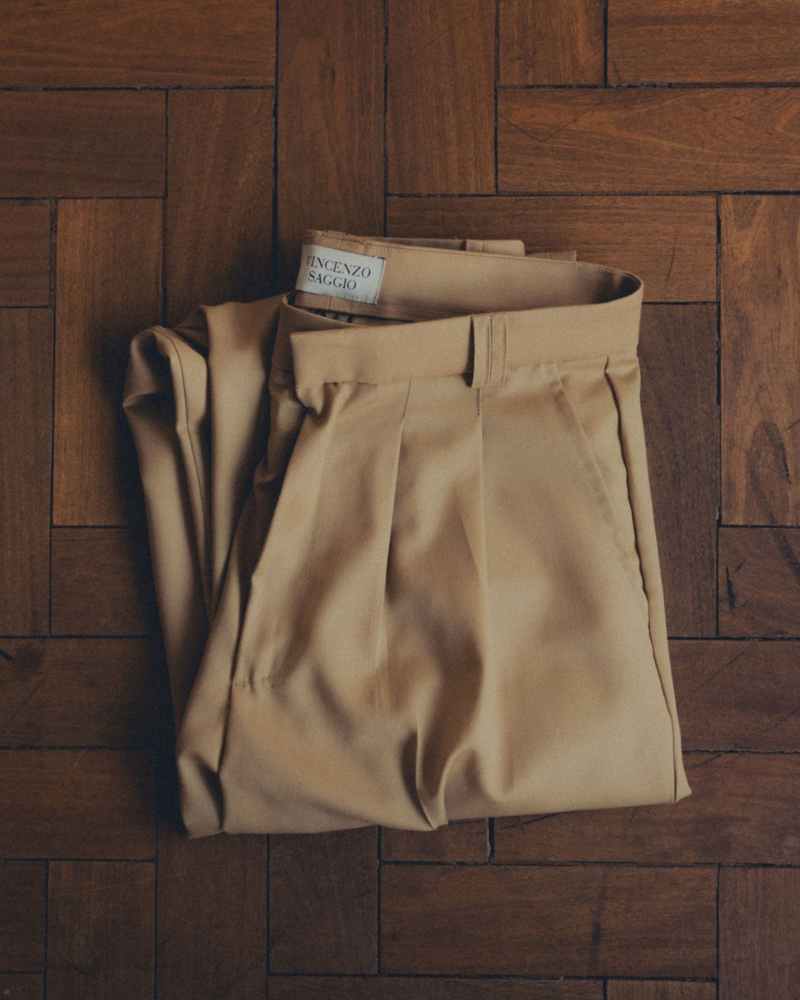

Acervo
Ver a coleçãoO clássico não precisa ser tão rígido:
A coleção nasce da ideia de construir um guarda-roupa que permaneça. A partir dos fundamentos do vestir masculino, camisa e calça, o Acervo traz proporções amplas, matérias-primas naturais e uma elegância menos rígida, pensada para a vida contemporânea.
Ver a coleção AcervoColeção Acervo
Camisa e calça, os fundamentos:
Monte o look
Escolha uma de cada e veja as duas juntas antes de levar.
O look
O segredo mora também na forma de usar:
-

Botões abertos
E uma boa combinação de joias. A camisa relaxed não pede gravata.
-
As mangas dobradas
As pregas nos punhos deixam a dobra cair do jeito certo, sem esforço.
-

Uma boa calça
Sustenta muito bem os códigos clássicos, mesmo quando o resto é uma camiseta ou até um tênis.

Quem é Vincenzo
Ler a históriaVincenzo Saggio nasce do encontro entre a sofisticação italiana e o calor da cultura brasileira. Entre o refinado e o rústico. Entre o clássico e o tropical.
É a arte da sprezzatura: a elegância sem esforço, contraditória, sedutora. Não é somente uma marca de roupas. É identidade, naturalidade, a elegância reconhecida na imperfeição.


- Envio gratuito
para todo o Brasil - Lã fria Super 120’s
e algodão - Trocas e
devoluções